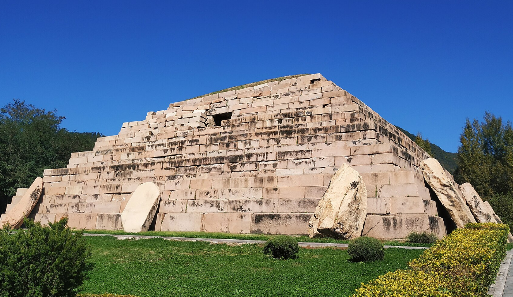
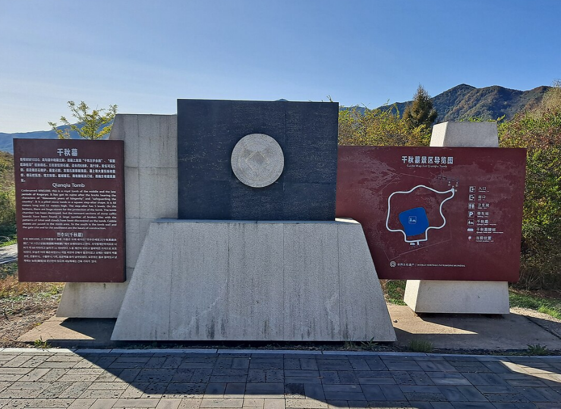
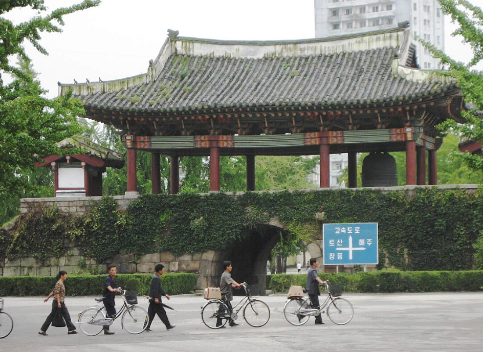
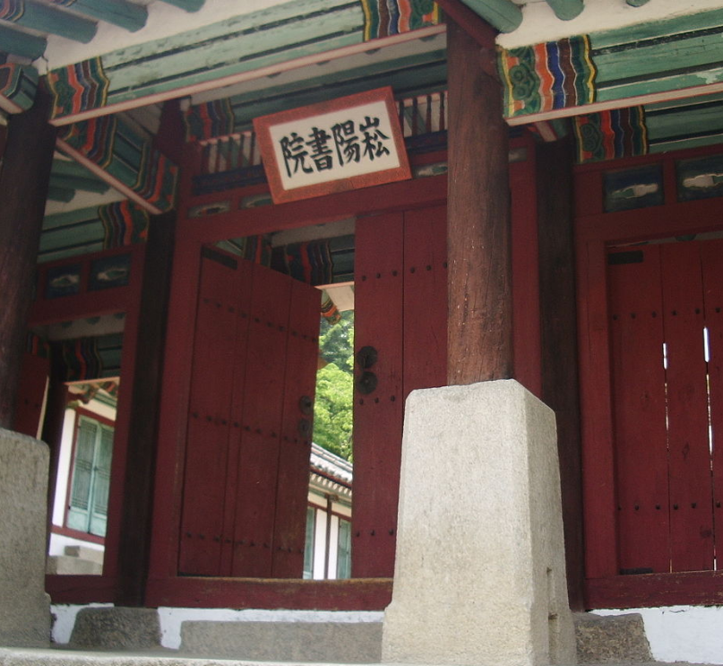
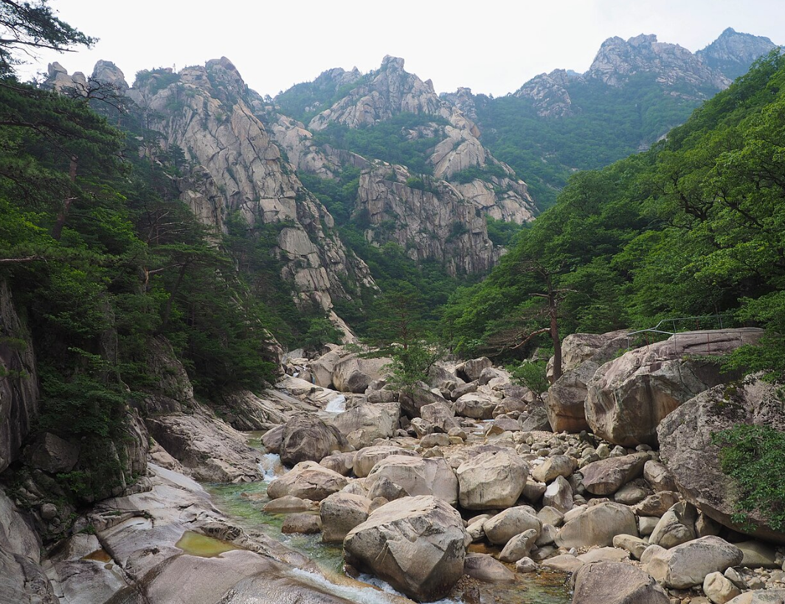
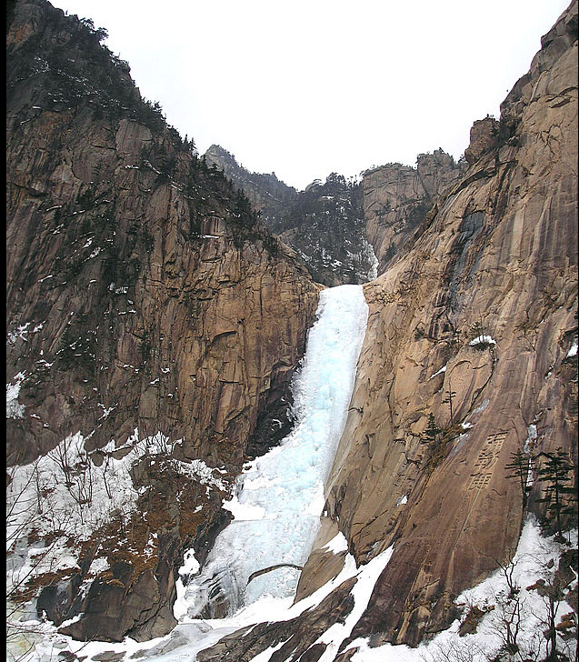

地理及氣候
人口與民族：人口約 2,600萬，主要為朝鮮族。
地理：位於朝鮮半島北部，地形以山地及高原為主（約佔80%），東北高、西南低。
氣候：屬溫帶季風氣候，四季分明，冬季寒冷乾燥，夏季高溫多雨。
旅遊：外國人需由官方旅行社帶領參觀，主要景點包括平壤市、妙香山及開城板門店。

旅遊簡報
簽證：外籍旅客（除特定中方公務人員）皆須簽證。旅客無法自助申請，必須參加官方認可的團體旅遊，由旅行社代辦「另紙簽證」
貨幣：外國人禁非法持有或使用朝鮮圓，交易僅限現金。建議攜帶小額的人民幣 (RMB)、美元 (USD) 或歐元 (EUR)。不接受任何信用卡或國際移動支付。
注意：嚴禁評論北韓領導人、政治體制或歷史。


高句麗古墓群
為公元前3世紀至公元7世紀高句麗文明的珍貴遺存, 已被聯合國教科文組織列入《世界遺產名錄》。
壁畫藝術：部分墓室內存有精美壁畫，生動再現當時的社會生活與宗教信仰。
著名遺跡：包括將軍墳（有「東方金字塔」之稱）及記載開國歷史的好太王碑。


開城歷史建築與遺蹟
位置：開城市。
2013年列入文化遺產。
這座遺址由12個獨立遺址組成，是10至14世紀高麗王朝的首都，體現了高麗的政治、文化、哲學和宗教價值。這裡融合了佛教、儒教、道教和風水觀念。
重要景點：高麗成均館、開城防禦性城牆、天文和氣象台、開城歷史古蹟區。




金剛山
2025年列入複合遺產/文化景觀
位置：江原道
為南北韓第一座同時擁有自然地貌（奇岩怪石、瀑布、名山）與文化歷史（佛教寺廟、古代石刻）的複合型遺產。分為內金剛、外金剛、海金剛，四季景色各異。
著名景點：九龍瀑布、表訓寺。
